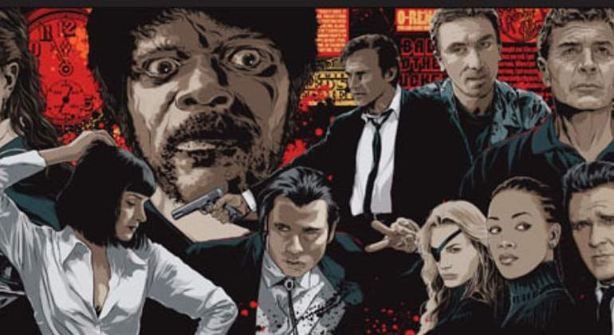

Película estadounidense de acción y suspenso del año 2007 escrita y dirigida por Quentin Tarantino. La cinta se centra en un psicópata doble de riesgo que asalta chicas jóvenes antes de asesinarlas con su coche de especialista «a prueba de muerte». La película es un tributo a los muscle cars y los géneros exploitation y slasher de los años 1970. Fue protagonizada por Kurt Russell, Zoë Bell, Rosario Dawson, Vanessa Ferlito, Jordan Ladd, Sydney Tamiia Poitier, Tracie Thoms, Mary-Elizabeth Winstead y Rose McGowan. Está dividida en dos partes, una dirigida por Tarantino y la otra por Robert Rodríguez. Ambas están separadas por falsos trailers de películas de terror, creados por los conocidos directores del género Eli Roth, Rob Zombie, Edgar Wright.
Esta película gira en torno a un psicópata de la carretera llamado Especialista Mike, un asesino en serie que va aniquilando a sus víctimas, siempre chicas jóvenes, con su coche de especialista "a prueba de muerte". La bella Jungle Julia se ha convertido en la dj de moda en la ciudad de Austin. La noche es su territorio y disfruta de ella junto a sus despampanantes amigas Shanna y Arlene. Acostumbradas a ser siempre el centro de las miradas masculinas, las chicas no saben que esta vez están siendo vigiladas por un sanguinario asesino. Se hace llamar Stuntman Mike y maneja su vehículo como si de de un arma de matar se tratara. Sus víctimas, mujeres hermosas y despreocupadas que desconocen su cruel destino.
Película estadounidense escrita y dirigida por Quentin Tarantino, estrenada en Estados Unidos en 2015. Se trata de un western que mezcla elementos de cine de misterio y comedia negra. Tarantino anunció la realización de la película en noviembre de 2013. Sin embargo, tras filtrarse el guion en enero de 2014, decidió cancelar la producción de la misma y publicar el guion como una novela. Después de una lectura del guion en abril de ese mismo año, Tarantino comentó que había cambiado de opinión y que la película se haría finalmente.
Pocos años después de la Guerra de Secesión, una diligencia avanza por el invernal paisaje de Wyoming. Los pasajeros, el cazarrecompensas John Ruth (Kurt Russell) y su fugitiva Daisy Domergue (Jennifer Jason Leigh), intentan llegar al pueblo de Red Rock, donde Ruth entregará a Domergue a la justicia. Por el camino, se encuentran con dos desconocidos: el mayor Marquis Warren (Samuel L. Jackson), un antiguo soldado de la Unión convertido en cazarrecompensas de mala reputación, y Chris Mannix (Walton Goggins), un renegado sureño que afirma ser el nuevo sheriff del pueblo. Como se aproxima una ventisca, los cuatro se refugian en la Mercería de Minnie, una parada para diligencias de un puerto de montaña. Cuando llegan al local se topan con cuatro rostros desconocidos: el mexicano Bob (Demian Bichir), Oswaldo Mobray (Tim Roth), verdugo de Red Rock, el vaquero Joe Gage (Michael Madsen) y el general confederado Sanford Smithers (Bruce Dern). Mientras la tormenta cae sobre la parada de montaña, los ocho viajeros descubren que tal vez no lleguen hasta Red Rock después de todo.